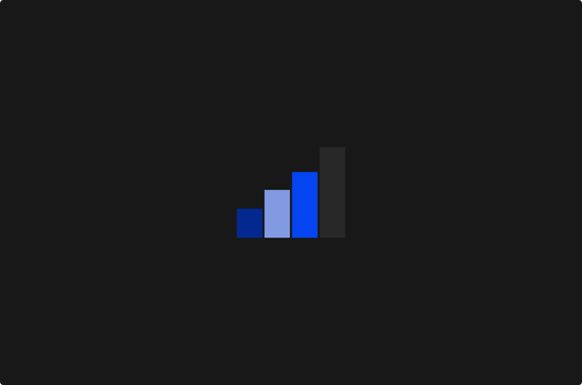

"
The way to make your startup grow, is to make something users really love.— Paul Graham
The world of sales playbooks and growth hacks is noisy - it's hard to find the signal. We have curated our favourite resources on the topic from top Founders, VCs and Sales leaders on how to harness growth and sales.
Whether you're a startup founder looking to take your venture to the next level or an established business owner seeking fresh insights, this tool is your companion.
